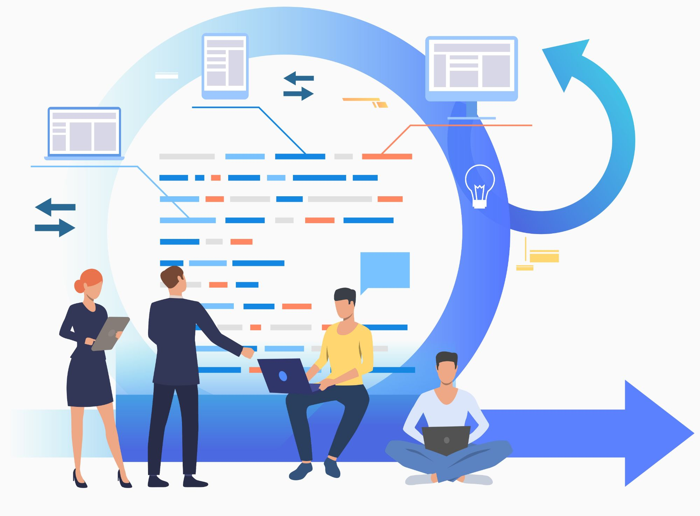
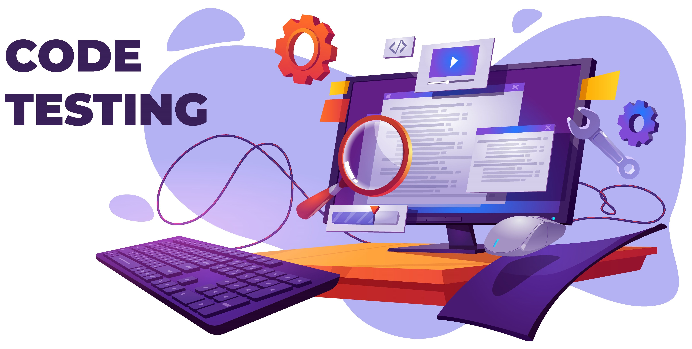
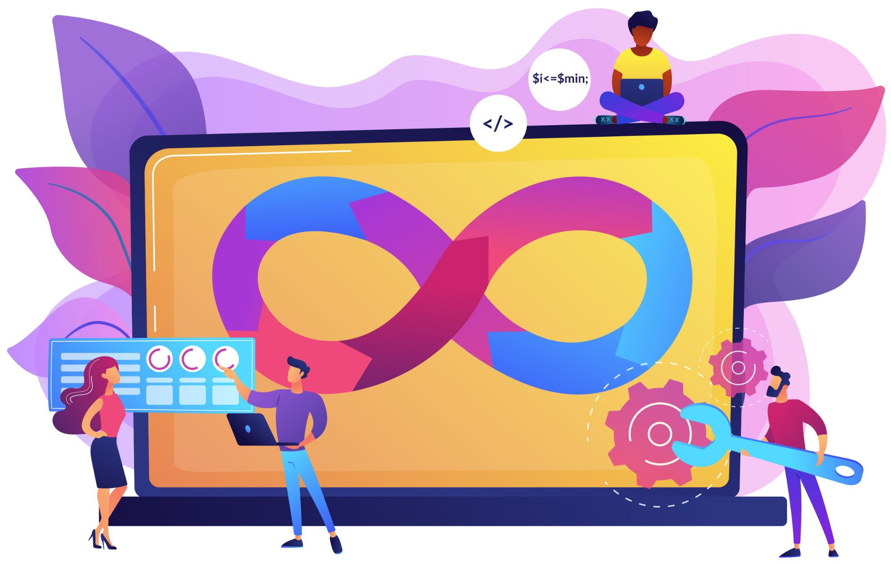
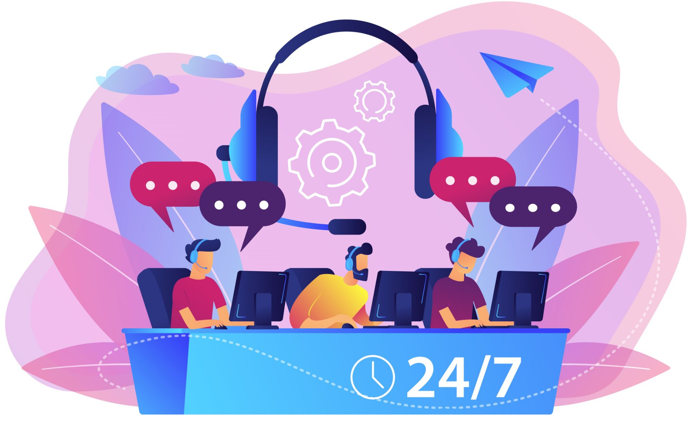

SERVICES
Global IT Staffing is committed to deliver Information Technology solutions. We provide end-to-end IT consulting and software development services through a combination of offshore and on-site delivery models. Our practices and focus to deliver a great satisfaction to our clients and help them to minimize the time and cost relatively on recruitment process. We focus on unique requirement of your company and industrial vertical to become your partner in the process of hiring and sourcing. We have introduced a fast track delivery program where we meet our client expectation in short duration and deliver them what they need.
Quality Standards
Global IT Staffing takes the time and effort to understand in depth of the requirements of our clients and ensure that our consultants have the right mix of experience, technical knowledge and culture exposure to fit the job requirements. We have set of technical staff for initial screening and interview to filter the best talent for our customer. We constantly in touch with its consultants, and ensures that they are up to date on the latest technologies that are required for executing their jobs.
We Offers
Contract Staffing :
(Mission to complete) We offer a wide range of skills to accept your contract opportunities. Our consultants can relocate and available at your location to full-fill the need of your project. We help recruiting these consultants and properly screen, evaluate their effectiveness to the project so they can start delivering from day one.
Temp to Hire :
(Drive to Win) We provides consultant for temp to hire opportunities for our customers. We focus on local and nearby state individuals seeking full-time conversation opportunities. We also evaluate the consultant from our databases and keep a track of them to see their interest in full time opportunities.
Full-Time :
(Employee) We have a special team deliver our customer in full-time needs. It requires more attention in terms of their relocation, settlement, family, and full satisfaction towards the employment. We pre-screen in every case and understand the short future plan and their need, expectation and settlement.
Fast Track Delivery Program :
We have introduced fast track delivery program where our consultants are ready to start delivering the project in 2 days. We keep ready their papers with all the necessary BCG and relocate them as needed. We make sure they are perfectly matching the need of our customers and have proper industry knowledge. Our Screening team works very hard to streamline the consultant based on their skill and prepare a list of them which we can place them superfast. We also work on to gather the list of rare skills and get in touch with the consultants on regular basis.
Other Services
Training and Development :
We provide training in different technologies like, Quality Analysis, Software Development, Databases, Documentum and Storage technologies. Our training team based out in India and US and available on request to provide related training on technologies. We provide Certification and credential too for these programs.
RPO (Recruitment Process outsourcing) :
We provide Recruitment Process outsourcing to be successful in completing the project for our clients. We take care of whole recruiting stuff sourcing to joining. We have a well settle facility where we can set the consultants to deliver the project offshore if required.
Industries And Clients
Global IT Staffing covers most of the IT skills and industries. There are different skills that we help our client on daily basis.
Our client deals in
· Software development,
· Project Management,
· Program Management and PMO,
· Network and Server infrastructure,
· Databases and Virtualization,
· Quality Analysis and Business Analyst
· Data Management,
· System development and analysis,
· ERP, SAP, Oracle, PeopleSoft
Industrial segments
· Information Technology
· Healthcare
· Power and Utilities
· Banking and Financial
· Telecommunications
· Media and TV
· Automobiles
Staffing Helps In Various Ways
Decrease Costs :
Temporary staff persons are employed by the staffing agency, not the business that is using their services. This can decrease the overall costs of the employee as the business does not have to provide benefits to a temporary staff member. In addition, bringing in temporary staff may reduce other overhead costs such as overtime for regular, full-time employees. While the per-hour cost may be more than the per-hour cost of a full-time employee, temporary staff can be used as needed without a commitment of a 40-hour workweek regardless of if the work exists to support it.
Avoid Unemployment Claims :
Because the temporary staff person is an employee of the staffing agency and not the business, there is no concern about the person filing for unemployment when their services are no longer needed by the business. This can also reduce overall operating costs for the business as the unemployment claims rate of the business will not be raised due to letting go of temporary staff. Human resources costs may also decrease as managers will not be spending multiple hours dealing with unemployment claims and the Department of Labor.
Increase Flexibility :
Temporary employees allow businesses to use staff as needed. Temporary employees can be brought in to cover the vacation of an employee or maternity leave. Many staffing agencies can provide employees in a wide variety of disciplines to meet all of the needs of the business. The business then has the flexibility to use the services of the temporary staff as needed, whether it is a few hours a week or on a full-time basis. Using a staffing agency can avoid the permanent commitment that a full-time employee requires, saving both time and money.
Workflow

Requirement Analysis
Collect all the requirement from client for the product. Then analysis the requirement
within team.
Planning And Designing
we plan as per our analysis and set goals for each module.
Designing consist application design, database design and web or app designing
Implementation
After approval from client we go for dynamic implementation of product. In this step
we develop API (application programming interface), database , web UI, App UI
and API integration.

Testing
After every module completion we go for quality testing of the product. If we found
any issue, then we again back to development team

Deployment
After quality testing we deployed the product on the production sever. we keep two
server while developing our product. One for beta server and another production sever

Support And Maintenance
our work not ended after deployed to production sever, we will give support on each
module. As well as maintenance of the product.